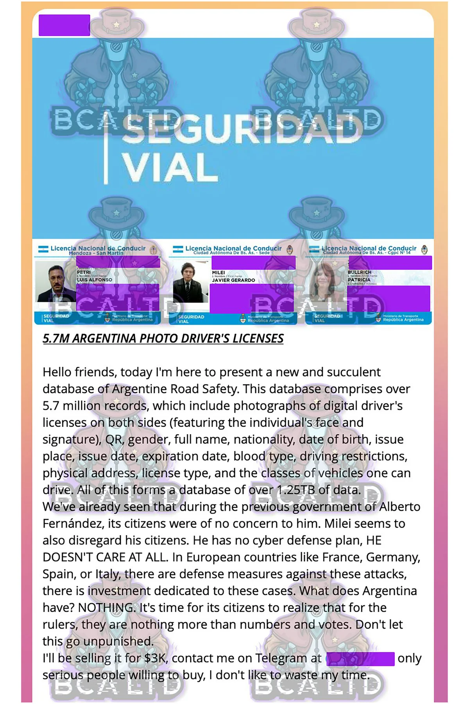

El Gobierno confirmó el robo, pero advirtió que “no hay información sensible comprometida”. Aparecen figuras del espectáculo, la política y hasta Javier Milei
Tras la filtración de una base con cerca de 6 millones de archivos con imágenes y datos de licencias de conducir, el Gobierno confirmó el hackeo y aseguró que no hay “información sensible comprometida”. A través de un comunicado de la Agencia Nacional de Seguridad Vial (ANSV), se detalló se trató de un grupo de “hackers profesionales” que accedió a un “caudal acotado” de información que se utiliza para la confección de las Licencias Digitales.
Ante la consulta de Infobae, en la Casa Rosada señalaron que no se trata de un “robo”, sino de una filtración. Una vez que se conoció la información, esta tarde, desde la Dirección Nacional de Ciberseguridad y el Centro de Atención de Respuestas a Incidentes (Cert.Ar) intervinieron para disuadir el ciberataque y tomar las medidas pertinentes. Conforme pudo conocer este medio, se trató de un hackeo que accedió a una parte de la base de datos que almacena información sobre Licencia Nacional de Conducir. Tras concretar el ciberdelito, el hacker publicó en la aplicación Telegram los archivos para comercializarlos. Para acceder a los datos sustraídos, se pedía en torno a USD 3000.
Las imágenes que filtraron un grupo de hackers que sustrajo información de la Agencia Nacional de Seguridad Vial
Tras ejecutarse la sustracción de la información, se iniciaba un circuito que consistía en poner en venta los datos a cambio de dinero. Según le indicaron a Infobae, se trata del mismo atacante que a principios de abril robó 116.000 fotos de ciudadanos argentinos del Registro Nacional de las Personas (Renaper). Ante la consulta sobre si se trata de un robo con alguna intencionalidad política, en el Gobierno no confirmaron esa hipótesis y señalaron que continúan investigando los detalles y la ruta informática del hackeo para corroborar cómo se lesionó la seguridad de la base de datos de la Agencia Nacional de Seguridad Vial.
No obstante, dentro de los datos filtrados, sobresale información de los registros de conducir de personalidades del mundo del espectáculo y también políticos. Entre ellos, el propio presidente de la Nación, Javier Milei, Luis Petri, ministro de Defensa, y Patricia Bullrich, titular de la cartera de Seguridad. Mientras que dentro de los famosos sobresalen nombres como los de Guillermo Francella, Chino Darín, Marcelo Tinelli, Tini Stoessel y Peter Lanzani. Según consignó el grupo de Hackers en un mensaje que difundieron en inglés, la responsabilidad de la filtración corresponde al Jefe de Estado. “Al presidente Milei no le interesa tener un plan de ciber seguridad, como en otros países del mundo”, expresa la comunicación.
El Gobierno intervino para frenar el ataque cibernético y evalúa tomar medidas al respecto
La filtración salió a la luz pública a través de un informe de la empresa del Reino Unido BCA LTD, especializada en cibernética, cybercrimen, y amenazas digitales. Con los datos sustraídos, el grupo de hackers publicó fotos, los números de DNI, los domicilios y hasta el grupo sanguíneo. Respecto al robo que había sufrido la otra dependencia del Estado Nacional que almacena datos personales de ciudadanos argentinos, el 3 de abril se conoció que se subieron a un foro de compra-venta de datos personales y en Telegram los datos de un archivo con 116.459 fotos de ciudadanos de Argentina que le habían sido sustraídos al Renaper en 2021.
Por ese robo al Renaper de hace dos año, se abrió un expediente a partir de una demanda penal. La investigación tramita en el Juzgado en lo Criminal y Correccional Federal N° 11. Aún no se determinó si el delito fue cometido por la persona dueña de ese usuario o si alguien externo robó el usuario y la contraseña que aplican las diferentes entidades públicas con acceso a conectarse y consultar la base de ese organismo. En relación con la filtración a la ANSV que se conoció hoy, el Gobierno no definió aún si iniciará en lo inmediato alguna demanda para solicitar una investigación judicial. Mientras tanto, Dirección Nacional de Ciberseguridad ya intervino y evalúa que medidas tomar.